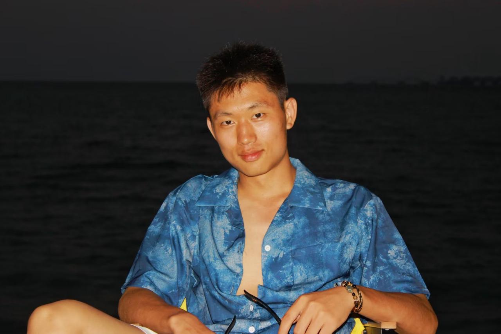

向内求索，
身体在路上。
祖仁泽
保持严谨，也保持好奇。个人网站 / 生活与探索

关于我
向下探索 ↓
严谨是底色。
好奇心，让我向前。
01 关于我
做一个能扛事、
守底线的人。
贵阳人，本科学法。读书期间赴重庆服役两年，之后返校完成学业。也是大学棒球队校队的一员。经历过不同的环境，在其中慢慢找到自己的方向。
工作之外，读书、跑步、写东西。现在，把新的好奇心投向 IP＋AI。
更多关于我 ↗02 我的几个侧面
经历 / 生活 / 探索

此心安处
是吾乡。
读书、听琴、独处，
把日子过得具体一点。
山高水长。